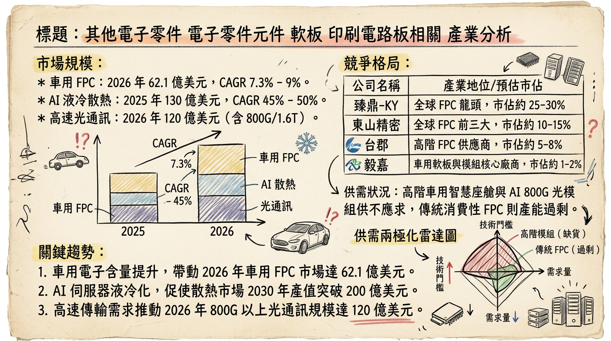

2402 毅嘉 深度研究報告
一句話摘要
毅嘉 (2402) 正由傳統軟板廠轉型為「車用與 AI 子系統模組解決方案商 (AMS)」，受惠馬來西亞新廠放量與 1.6T 光通訊模組研發，2026 年 EPS 有望挑戰 3.02 - 3.50 元 歷史新高。
公司概覽
毅嘉早期以手機按鍵與軟板（FPC）起家，近年成功轉型為 子系統模組解決方案商（All Module Solutions, AMS），專注於高度整合的車用電子與 AI 基礎設施。
業務營收結構（2025 年上半年數據）：| 業務類別 | 營收佔比 | 核心應用產品 |
|---|---|---|
| 車用相關 | 60% | 智慧座艙 (28%)、連接板 (25%)、外飾件 (7%) |
| 穿戴式裝置 | 9% | 智慧手錶、醫療穿戴件 |
| 遊戲應用 | 8% | 遊戲手柄、VR/AR 模組 |
| 手機相關 | 4% | 內部連接軟板 |
| 光通訊（AI） | 3% | 400G/800G 傳輸模組 (2027 目標雙位數佔比) |
| 其他 | 16% | 工業、電腦周邊 |
核心競爭優勢
財務分析
月營收趨勢表：| 年/月 | 月營收 (億元) | 月增率 (MoM) | 年增率 (YoY) |
|---|---|---|---|
| 2026/02 | 8.29 | -14.85% | +10.62% |
| 2026/01 | 9.74 | +6.74% | +22.64% |
| 2025/12 | 9.12 | +4.67% | +15.22% |
| 2025/11 | 8.72 | -7.39% | +1.59% |
| 2025/10 | 9.41 | -4.75% | +8.67% |
| 2025/09 | 9.88 | +3.31% | +13.47% |
- 2024 (實際)： 營收 95.31 億元，EPS 2.36 元。
- 2025 (實際)： 營收 108.49 億元 (突破百億)，EPS 2.46 元 (創 11 年新高)。
- 2026 (法人預估)： 營收雙位數成長，EPS 預估 3.02 - 3.50 元。
法說會重點
- 訂單能見度： 車用訂單穩定，2026 Q1 Forecast 預計持平或微幅增長，全年將呈現「逐季增溫」。
- 馬來西亞進度： M2 廠 2026 年起逐季放量，優先承接美系車用與光通訊 CSP 客戶。
- 散熱佈局： 林口廠液冷/氣冷方案已小量出貨，2026 年正式放量進入伺服器市場。
- 資本支出： 每年預算維持 10 億元以上，專注於 Non-China 產能。
券商觀點
券商目標價表格：| 券商名稱 | 報告日期 | 目標價 | 評等 | 備註 |
|---|---|---|---|---|
| 凱基投顧 | 2026/02/26 | 60.0 元 | 持有/觀望 | 接近目標價，短期獲利了結 |
| 理周投研部 | 2025/12/22 | 58.0-62.0 元 | 買進 | 看好 2026 EPS 3.5 元 |
| 兆豐證券 | 2025/08/08 | 60.0 元 | 買進 | ⚠️ 資料過時 |
| 市場共識 | 2026/03/02 | 48.0-60.0 元 | 區間操作 | 觀察 55 元 CB 轉換壓力 |
財報深度分析
利潤率趨勢表格 (單位：%)：| 季度 | 2024 Q4 | 2025 Q1 | 2025 Q2 | 2025 Q3 | 2025 Q4 |
|---|---|---|---|---|---|
| 毛利率 | 19.48 | 17.73 | 19.94 | 18.66 | 20.00 |
| 營業利益率 | 9.08 | 7.62 | 9.07 | 7.97 | 10.10 |
| 稅後淨利率 | 8.30 | 7.18 | 7.38 | 6.40 | 8.12 |
- 營運指標： 2025 Q3 存貨金額約 11.4 億元，周轉天數 43.34 天，控管良好。
- 負債分析： 2025 Q3 負債比 53.34%，主因發行 CB 與馬來西亞擴廠借款，處於投資高峰期。
- 折舊壓力： 隨著 M2 廠投產，2025 Q3 單季折舊約 8,268 萬元，2026 年預計隨稼動率提升而緩解。
股權異動
- 可轉換公司債 (CB)： 2025 年 11 月發行「毅嘉三 (24023)」，規模 10 億元，轉換價格 55 元。目前股價在 55 元附近震盪，需留意債轉股的稀釋壓力。
- 庫藏股： 2024 年 4 月轉讓 3,500 張予員工，顯示公司留才決心，已於 2025 Q2 認列相關費用。
- 申報轉讓： 2024 年底有部分董事及親屬申報轉讓合計約 764 張，屬於個人財務規劃。
產業分析
全球前 5 大 FPC/電子組件公司 (2025 預估)：| 排名 | 公司名稱 | 國籍 | 市佔率 | 優勢領域 |
|---|---|---|---|---|
| 1 | Nippon Mektron | 日本 | ~20% | 車用、航太高階 FPC |
| 2 | 臻鼎-KY | 台灣 | ~18% | 蘋果供應鏈、載板 |
| 3 | 東山精密 | 中國 | ~12% | 消費性電子、車用 |
| 4 | 住友電工 | 日本 | ~9% | 精密通訊、高階基材 |
| 5 | 台郡 | 台灣 | ~7% | 5G 毫米波應用 |
| 公司名稱 | 2025 營收 | 毛利率 | 2025 EPS | 特色 |
|---|---|---|---|---|
| 毅嘉 (2402) | 108.49 億 | ~19.5% | 2.46 | 車用佔比最高 (60%) |
| 臻鼎-KY (4958) | 1,500 億+ | ~18.0% | ~9.5 | 規模最大，跨足載板 |
| 嘉聯益 (6153) | ~110 億 | ~11.0% | 0.2 | 受手機市況疲軟影響 |
近期催化劑
- 【利多】2026/03/11 董事會： 預計決議 2025 年股利政策，市場期待維持 80% 高盈餘分配率。
- 【利多】1.6T 光模組認證： 若 2026 H1 取得美系大廠認證，將顯著調升 2027 獲利預期。
- 【利空】地緣政治衝擊： 2026/03/03 因中東衝突引發全球避險，股價觸及跌停 (54.9 元)，短期籌碼鬆動。
- 【利空】匯率風險： 營收 90% 為美金計價，台幣強升將侵蝕匯兌利益。
⭐ 成長動能時間軸
- 2025 Q4： 馬來西亞 M2 新廠落成，首批設備進駐。
- 2026 Q1： M2 廠開始小量量產，前 2 月營收年增 16.8% 驗證動能。
- 2026 Q2： 車用外飾開關模組於馬來西亞廠正式放量，ASP 提升。
- 2026 H2： 1.6T 高速傳輸模組研發完成並進入試產；馬國廠貢獻度顯著提升。
- 2027： 光通訊與散熱模組營收佔比挑戰雙位數；無人機軟板模組規模化。
2026 展望
- 成長動能：
2. AI 資料中心對 800G/1.6T 的強勁需求。
3. Non-China 供應鏈（馬來西亞）產能溢價。
- 主要風險：
2. 外部戰爭或關稅政策導致客戶拉貨節奏放緩。
投資結論
本報告由 AI 自動產生，資料來源為公開網路資訊，僅供參考，不構成投資建議。產生時間：2026-03-04 07:55
📊 資訊卡

